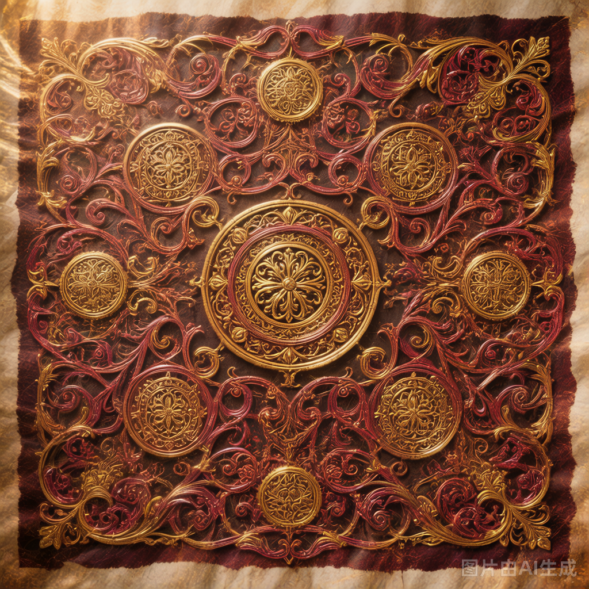

马基雅维利原文图书馆
Machiavelli Library · 原文 · 双语 · 可检索

Benché io sia al mulino, non sono però diventato asino.
虽然我身在磨坊，但我并非变成了驴。
17著作
618文件
中英双语
⌕
Machiavelli Library · 原文 · 双语 · 可检索

Benché io sia al mulino, non sono però diventato asino.
虽然我身在磨坊，但我并非变成了驴。